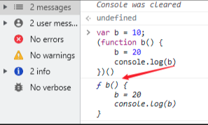

说说下面代码执行后的输出是什么？
题目
var b = 10;
(function b(){
b = 20;
console.log(b);
})();参考答案
先看浏览器中的执行结果：

解析
- 代码预解析时，会将var b进行变量提升，此时b没有被赋值(b=undefined) (这里有人会说这里明明有个函数表达式呀，为什么没有进入变量提升，因为IIFE自带有词法作用域(我们常理解得作用域))
- 发现没有可以变量提升得时候将b赋值为10，此时会将b 赋值为10(b=10)
- 碰到了立即执行函数，会执行其内边的函数 function b()
- IIFE作用域中定义b = function b(){}
- 碰到了b = 20，会顺着作用域链寻找是否存在b，发现IIFE作用域中存在b，将IIFE作用域中的b赋值为20(b=20)(因为函数表达式特性，标识符无法被修改，所以这里执行失败)
- 执行console.log(b)，此时的b会找IIFE中的作用域看看是否存在b，发现其内边存在，将其返回